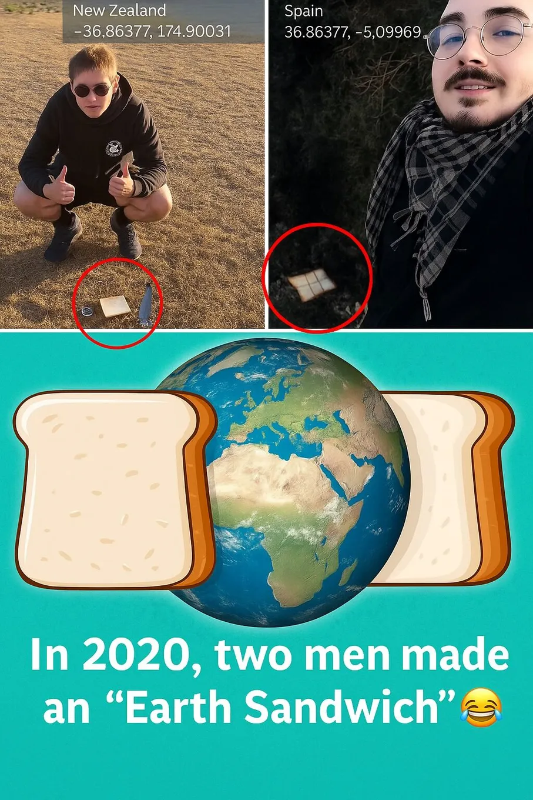

How two people built an Earth sandwich
Originally posted on LinkedIn, June 20, 2025.
In 2020, Etienne Naude, a student from Auckland, New Zealand, and Angel Sierra, a chef from Spain, created an "Earth sandwich." They placed slices of bread at exact antipodes, directly opposite each other on the planet.
They used online tools to calculate the precise locations. The slices were about 12,724 km apart through Earth, or roughly 20,000 km apart along its surface.
They had to deal with a 12-hour time difference and coordinate the type of bread, but they eventually created a symbol of global cooperation. The project shows how simple ideas can connect people across geographic and cultural borders. It also shows there is no limit to the ridiculous things boys will do.
